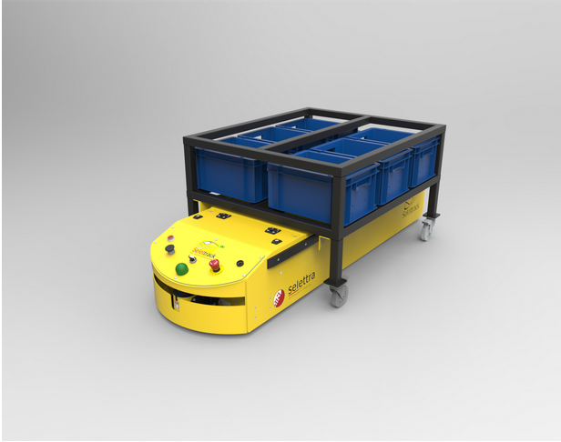
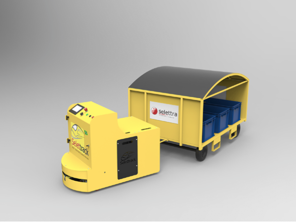
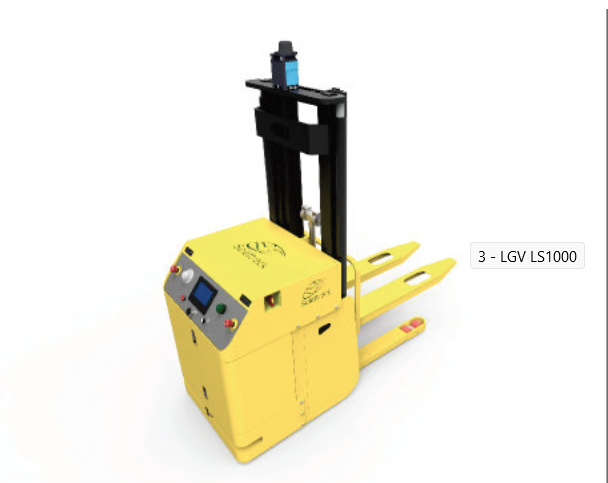
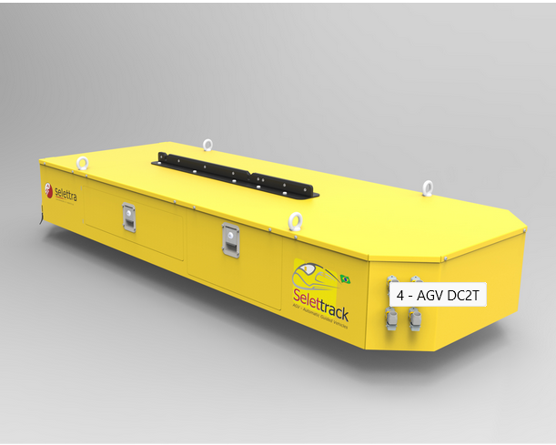
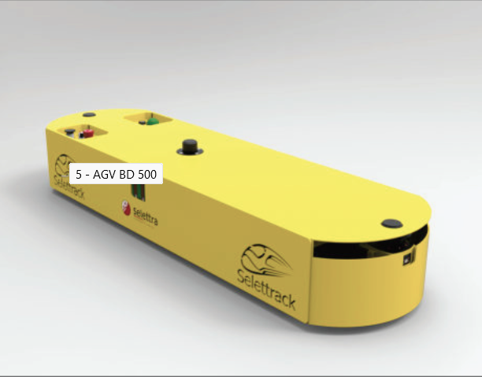
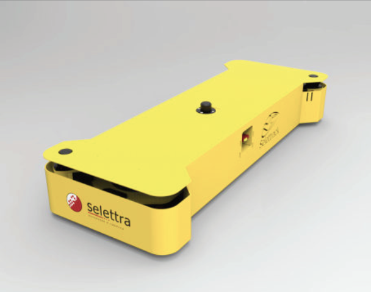
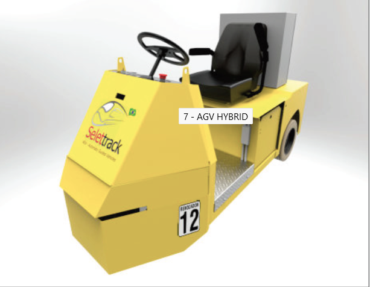

| Equipamento | Função |
|---|---|
|  | LG1000: O modelo do veículo autônomo Selletrack oferece ampla gama de aplicações, sendo ideal para transportes logísticos de conjunto único. Com indexação automatizada dispensa a ação de operadores no processo, o que reduz o tempo de ciclo de entrega. Programado com um modo aprendizado, sua configuração é simples e rápida, agilizando sua implementação. |
|  | AGV Selettrack LCH1200 O modelo do veículo autônomo Selettrack LCH1200 é considerado um produto colaborativo, tendo em vista que sua ergonomia facilita a interação com o operador. Sua indexação é feita manualmente e conta com a capacidade de transportar comboios logísticos variados. Sua programação é facilmente elaborada através de um touch panel avançado, podendo assim configurar entregas em diversos postos de trabalho. Especificações Capacidade de carga: 1200kg Tara: 450kg Força de atrito: 350kgf Velocidade Nominal: 20m/min Altura do solo: 25mm |
|  | AGV LS1000 O modelos de veículo autônomo Selettrack LS1000 conta com sistema avançado de navegação laser, utilizando triangulação cartesiana para se movimentar. Com modo aprendizado de percurso dispensa cortes no piso ou instalação de fitas ao solo para a definição do trajeto, maximizando a flexibilidade da aplicação. O transporte de cargas paletizadas enquadra esse modelo em aplicações logísticas repetitivas e com alta capacidade de integração automatizada. Especificações Capacidade de carga: 1000kg Tara: 550kg Força de atrito: 10kg Velocidade Nominal: 45m/min Altura do solo: 55mm Precisão de parada: 10mm Raio de giro mínimo: 1,6m a 90° Tensão: 24V |
|  | AGV Selettrack DC2T O modelo do veículo autônomo Selettrack DC2t foi concebido para utilização em processos produtivos. Sua customização é feita de acordo com a necessidade de cada cliente, podendo suportar altas capacidades de carga. Sua implementação é feita juntamente com um software gerenciador, o que possibilita altos níveis de controle e precisão, além de intercomunicação entre os veículos. Especificações Capacidade de carga: 2500kg Tara: 700kg Força de atrito: 50kgf Velocidade Nominal: 30m/min Altura do solo: 35mm |
|  | AGV BD500 O modelos de veículo autônomo Selettrack BD500 possui capacidade de transitar em dois sentidos, o que clássica-o como um veículo bidirecional. Sua capacidade de transitar em espaços pequenos e atender monovias de tráfego é assegurada através de seus dois sistemas de direção integrados. Seu diferencial está na capacidade girar em torno próprio eixo e realizar manobras de estacionamento com precisão. Especificações Capacidade de carga: 500kg Tara: 320kg Força de atrito: 40kg Velocidade Nominal: 30m/min Altura do solo: 25mm Precisão de parada: 10mm |
|  | 6 - AGV MD500 AGV MD500 O modelos de veículo autônomo Selettrack MD500 possui a característica de mover-se em qualquer direção, seguindo sempre um trajeto orientado no piso. Seu desenho construtivo permite que seja possível transitar de forma segura para qualquer lado com a proteção laser de segurança. Sua movimentação facilitada permite que o mesmo seja utilizado em monovias e também em aplicações que necessitam de manobras em pequenos espaços. Especificações Capacidade de carga: 500kg Tara: 280kg Força de atrito: 30kg Velocidade Nominal: 30m/min Altura do solo: 25mm |
|  | 7 - AGV HYBRID AGV Selettrack Hybrid Os modelos de veículos autônomos Selettrack Hybrid são conversões de veículos elétricos manuais, e portanto, podem ser facilmente integrados em soluções logísticas já existentes. O tempo de produção desse modelo é reduzido e após a conversão ainda é possível operá-lo manualmente, o que aumenta a flexibilidade do produto. Sua implementação é facilitada pela versatilidade e ergonomia que o modelo oferece. Especificações Capacidade de carga: Conforme rebocador Tara: Conforme rebocador Força de atrito: Conforme rebocador Velocidade Nominal: 30m/min Altura do solo: Conforme rebocador |